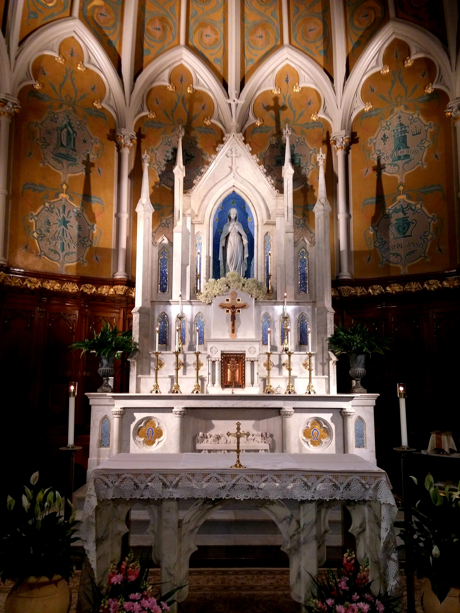

복사단
복사단은 대한민국의 예수회 재단 서강대학교의 교목처 소속의 복사 동아리이다.
영문 표기는 Sogang Altar Boys & Girls 이다.복사단은 대한민국의 예수회 재단 서강대학교의 교목처 소속의 복사 동아리이다.
영문 표기는 Sogang Altar Boys & Girls 이다.복사단은 대한민국의 예수회 재단 서강대학교의 교목처 소속의 복사 동아리이다.
영문 표기는 Sogang Altar Boys & Girls 이다.복사단은 대한민국의 예수회 재단 서강대학교의 교목처 소속의 복사 동아리이다.

영문 표기는 Sogang Altar Boys & Girls 이다.복사단은 대한민국의 예수회 재단 서강대학교의 교목처 소속의 복사 동아리이다.
영문 표기는 Sogang Altar Boys & Girls 이다.